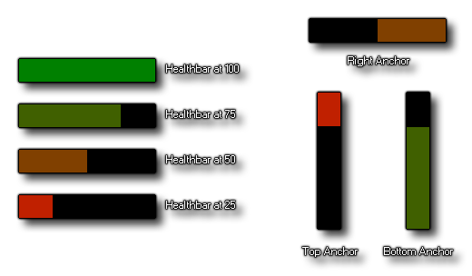

Zeichne Gesundheitsbalken Zeichne Gesundheitsbalken
Zeichne Gesundheitsbalken Zeichne Gesundheitsbalken Mit dieser Aktion können Sie einen farbigen Balken zeichnen, um eine grafische Darstellung eines Wertes anzuzeigen. Der anzuzeigende Betrag ist ein Prozentwert und muss in den Bereich von 0 - 100 fallen. Sie können jedoch immer noch größere Werte mit der Formel verwenden (CURRENT_Value / MAXIMUM_value) * 100 So können Sie beispielsweise Energie, Gesundheit, Mana, Zeit oder irgendetwas anderes anzeigen, das von einer Balkenanzeige profitieren würde. Neben dem zu zeichnenden Wert können Sie auch den Richtungsanzeiger für das Zeichnen des Gesundheitsbalkens (von links nach rechts oder von rechts nach links und von oben nach unten oder von unten nach oben) sowie die Position festlegen innerhalb des Raums oder relativ zu der Instanz, die die Aktion aufruft. Abgesehen von der Position können Sie auch die Farbe einstellen, die von jeder der vier Ecken der Gesundheitsbalken gemischt werden soll, indem Sie Farbverläufe von Rot zu Grün erstellen (zum Beispiel können Sie aber auch beliebige Farben verwenden). Unten sehen Sie ein Bild, wie eine einfache Gesundheitsbalken mit den verschiedenen Optionen aussieht: 
HINWEIS: Diese Aktion dient nur zur Verwendung in den verschiedenen Draw-Ereignissen und zeichnet nichts, wenn sie an anderer Stelle verwendet wird.
Streit Beschreibung Direction Die Richtung zum Zeichnen des Healthbar-Inhalts Value Der Wert (zwischen 0 und 100), der für die Gesundheitsbalken verwendet werden soll Left Die Position der linken Seite der Gesundheitsbalken Top Die Position der Spitze der Gesundheitsbalken Right Die Position der rechten Seite der Gesundheitsbalken Bottom Die Position des unteren Randes der Gesundheitsbalken Background Die Farbe, die als Hintergrund auf der Gesundheitsbalken angezeigt wird Outline Die Farbe, um die Gesundheitsbalken zu umreißen Min Colour Die Farbe, die vom Mindestwert überblendet wird Max Colour Die Farbe zum Überblenden vom Maximalwert
Der obige Aktionsblockcode zeichnet einen blauen und gelben "Mana" -Balken relativ zur Instanz.